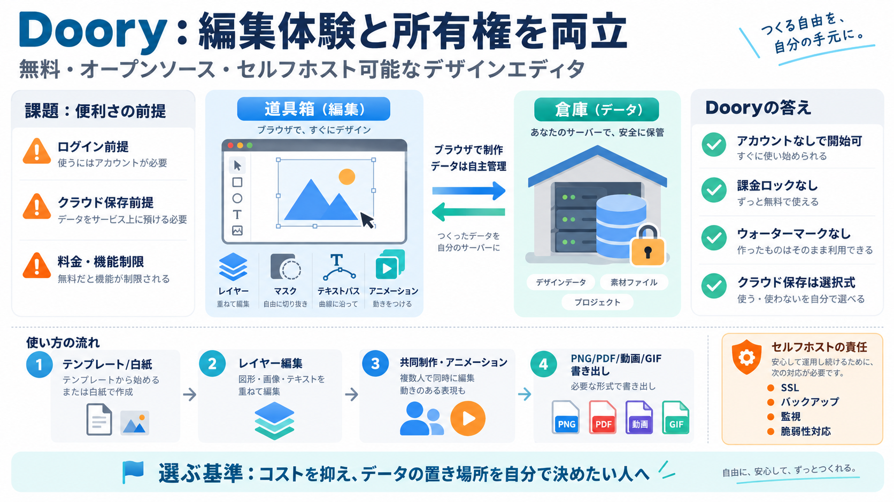

Self-Host AI Stack Without OpenAI: 2026 Guide
The Docker Compose setup described here is a solid starting point, but production hardening requires additional work: SS…

The Docker Compose setup described here is a solid starting point, but production hardening requires additional work: SS…
23 min read Docker Compose has become the standard tool for defining and running multi-container applications, and the …
``` docker run -d \ -p 3000:8080 \ --add-host=host.docker.internal:host-gateway \ -v open-webui:/app/backend/data …
Free (but $500–$1,000+ Mac Mini, $5–130/mo API costs, DevOps time) Free, or $49/mo for 5 agents and 12,000 credits Set…
Neither runtime is detected by a generator that only knows package.json, so here is a Dockerfile for each (Bun 1.4, Deno…